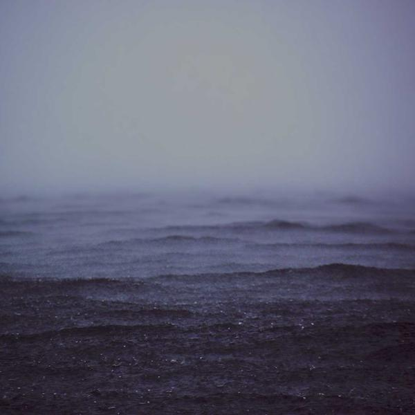
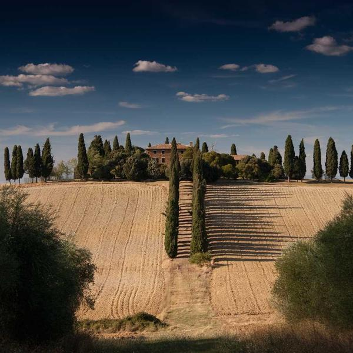
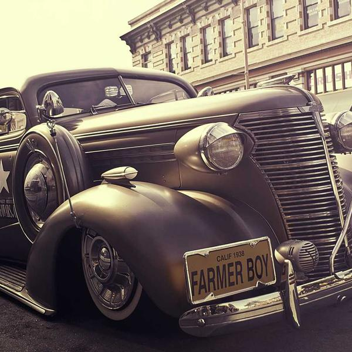
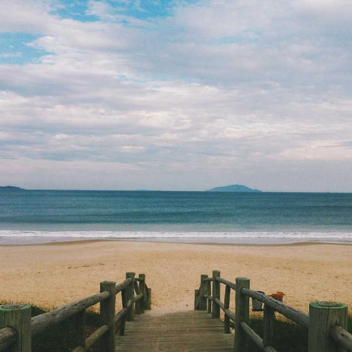
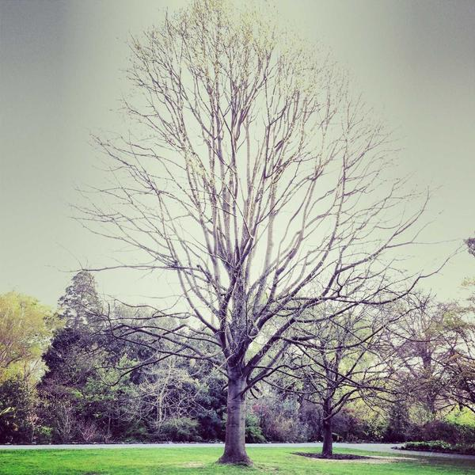
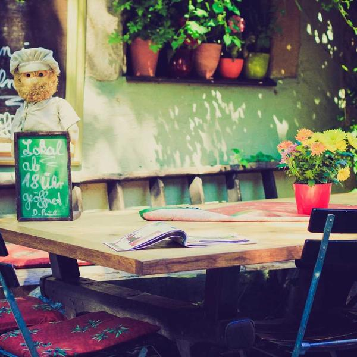

#
Title
- 1 Signal Decay Nils Aker Signal Decay 4:12
-
2

Harbour Wall Vela Moreno Slow Tide 4:05 -
3
 Halcyon Street
The Rookery
Halcyon Street
3:16
Halcyon Street
The Rookery
Halcyon Street
3:16
-
4

Low Country Fen & Farrow Low Country 4:31 - 5 Blue Hour Hana Sō Blue Hour 3:35
-
6

Chrome Gospel Wires & Wolves Chrome Gospel 4:21 - 7 Wintering Coastal Divide Wintering 5:24
- 8 Undertow Pale Harbour Undertow 4:02
- 9 Northlight Marta Ísleif Northlight 4:04
- 10 Terminal The Rookery Terminal 3:48
-
11

Saltglass Vela Moreno Saltglass 4:13 - 12 Low Water Vela Moreno Slow Tide 3:02
- 13 Cold Storage Nils Aker Cold Storage 5:04
- 14 Window Seat Vela Moreno Saltglass 3:29
- 15 Fog Signal Vela Moreno Harbour Lights 4:26
-
16

Paper Rooms Hana Sō Paper Rooms 3:58 - 17 Row of Pines Nils Aker Cold Storage 3:49
- 18 Green Room Vela Moreno Slow Tide 4:21
- 19 Dune Song Coastal Divide Dune Song 5:42
- 20 Amber Room Vela Moreno Saltglass 4:07
- 21 Glovebox The Rookery Terminal 3:34
- 22 Thirteen Weeks Vela Moreno Slow Tide 3:35
- 23 Fieldwork Marta Ísleif Fieldwork 4:22
- 24 Two Lamps Vela Moreno Harbour Lights 3:07
- 25 Long Way Down Coastal Divide Long Way Down 6:29
- 26 Half Light Vela Moreno Saltglass 4:02
- 27 Salt Air Vela Moreno Slow Tide 2:58
- 28 Velvet Static Hana Sō Blue Hour 3:27
- 29 Driftwood Vela Moreno Saltglass 3:14
- 30 Out Past the Buoy Vela Moreno Harbour Lights 5:12
- 31 Nightjar Vela Moreno Slow Tide 4:44
- 32 Paper Thin Vela Moreno Saltglass 3:38
- 33 Marram Vela Moreno Saltglass 2:51
-
34

Kestrel (Night Version) Vela Moreno Kestrel 4:48 - 35 Pale Blue Vela Moreno Slow Tide 3:12
- 36 Nine Bells Vela Moreno Saltglass 5:06
- 37 Slow Tide (Reprise) Vela Moreno Slow Tide 2:05
- 38 Last Ferry Vela Moreno Saltglass 3:22
- 39 Cotton Light Vela Moreno Slow Tide 3:18
- 40 Kestrel Vela Moreno Slow Tide 3:56
Showing 40 of 62 · 22 more tracks
Recommended for this playlist
More-
Dune Song
Coastal Divide · 2019
-
Paper Rooms
Hana Sō · 2023
-
Cold Storage
Nils Aker · 2025
-
Fieldwork
Marta Ísleif · 2020
-
Long Way Down
Coastal Divide · 2023